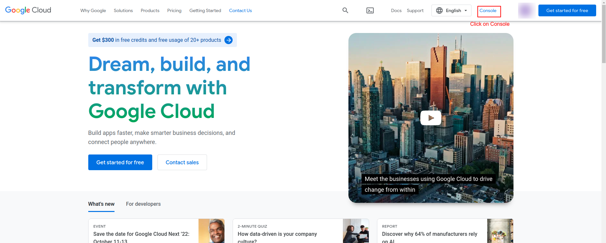
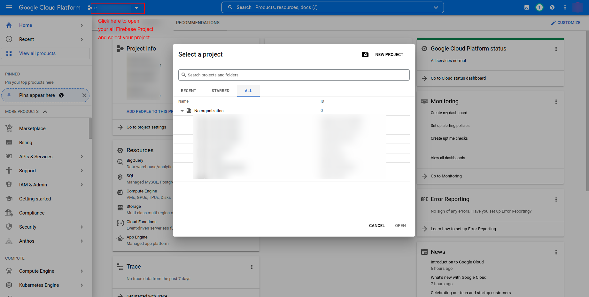
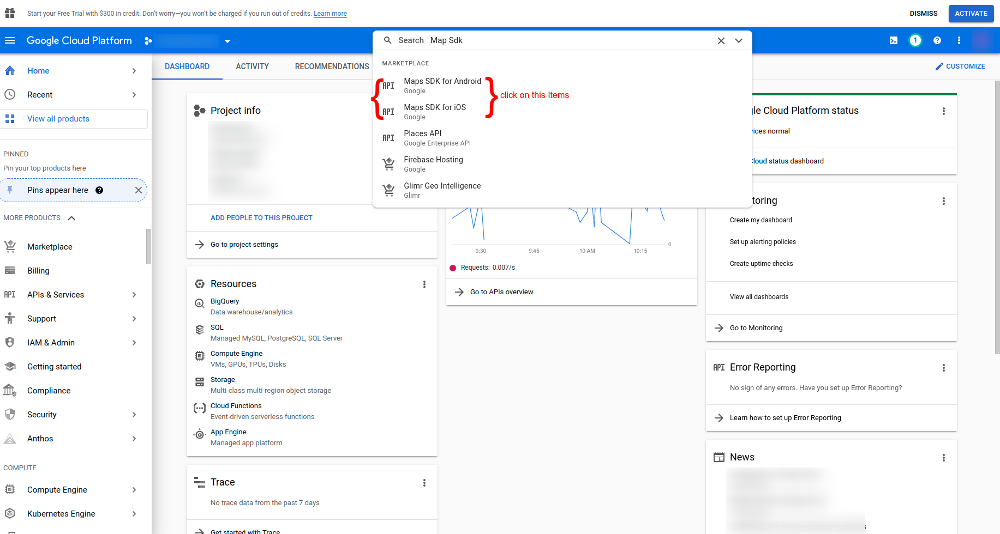
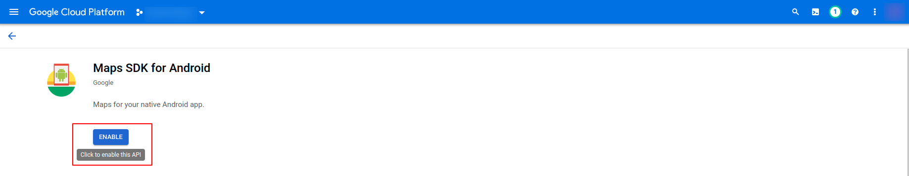
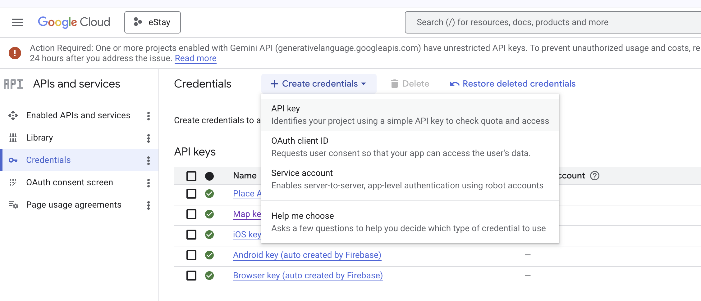

Add Map API Key
The app uses Google Maps for showing nearby stores and delivery locations. You need a Google Cloud API key with the Maps SDK for Android and Maps SDK for iOS enabled.
TIP
Google Maps usage may incur additional charges from Google beyond your free monthly quota. See their pricing page before going live.
Step 1 — Open Google Cloud Console
- Visit https://cloud.google.com/ and sign in with your Google account.
- Click Console (top-right) to open the Google Cloud Console.
- Create a new project, or select an existing one from the project picker.


Step 2 — Enable Required APIs
In the left sidebar, go to APIs & Services → Library, then search for and enable the following APIs:
- Maps SDK for Android
- Maps SDK for iOS
For each one, click the API → Enable.


Step 3 — Create an API Key
Google recommends creating two separate keys — one for Android, one for iOS — instead of one shared key. Each platform uses a different restriction type (package name + SHA-1 for Android, bundle ID for iOS), and a single key cannot carry both restrictions at once. Separate keys also let you revoke or rotate one platform's key without breaking the other.
- Go to APIs & Services → Credentials.
- Click + Create Credentials → API key.
- Edit newly created key, rename it something clear like
Android Maps Key, add the Maps SDK for Android API from Step 2, and tap Save. - Repeat steps 2–3 to create a second key named
iOS Maps Key, this time adding the Maps SDK for iOS API. - Copy both generated keys — you will paste them into the app code in Step 4.

Step 3.1 — Restrict Each Key for Production
Before releasing to production, restrict each key so it only works from your app. An unrestricted key can be copied from your app package and used by anyone.
Android key restrictions:
- Open the Android key in Credentials.
- Under Application restrictions, select Android apps.
- Click Add an item and enter your app's package name (e.g.
app.snapbuy.deliveryboy) and its SHA-1 certificate fingerprint (get it viakeytool -list -v -keystore your.keystoreor from Play Console → App signing). - Under API restrictions, select Restrict key and check only Maps SDK for Android.
- Save.
iOS key restrictions:
- Open the iOS key in Credentials.
- Under Application restrictions, select iOS apps.
- Click Add an item and enter your app's bundle identifier (e.g.
app.snapbuy.deliveryboy, found in Xcode → Runner target → General). - Under API restrictions, select Restrict key and check only Maps SDK for iOS.
- Save.
TIP
Add both your debug and release SHA-1 fingerprints for the Android key, or map testing will break in debug builds while working in release (or vice versa).
Step 4 — Paste the Key into the App
Android — AndroidManifest.xml
Open android/app/src/main/AndroidManifest.xml and add the following <meta-data> tag inside the <application> tag:
<meta-data
android:name="com.google.android.geo.API_KEY"
android:value="YOUR_MAP_API_KEY_HERE"/>Replace YOUR_MAP_API_KEY_HERE with the Android key you copied in Step 3.
iOS — AppDelegate.swift
Open ios/Runner/AppDelegate.swift and search for the following line:
GMSServices.provideAPIKey("YOUR_MAP_API_KEY_HERE")Replace YOUR_MAP_API_KEY_HERE with the iOS key you copied in Step 3.
Step 5 — Rebuild
flutter clean && flutter runMaps should now load correctly on both platforms.
WARNING
Never commit your raw API keys to a public repository. Apply key restrictions (Step 3.1) before release, and consider storing keys in a non-tracked file for production builds.